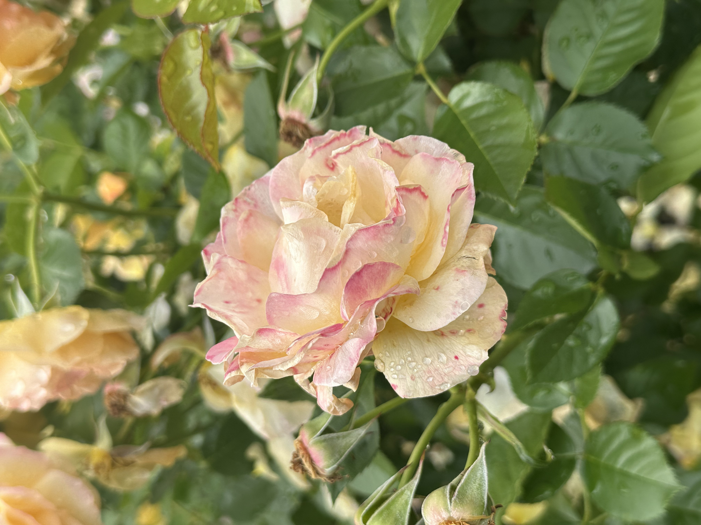
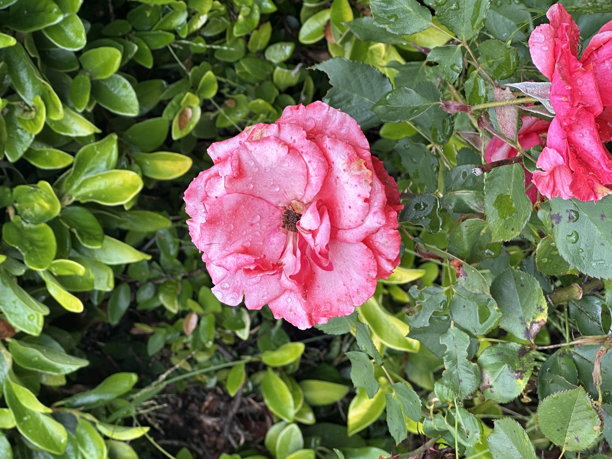
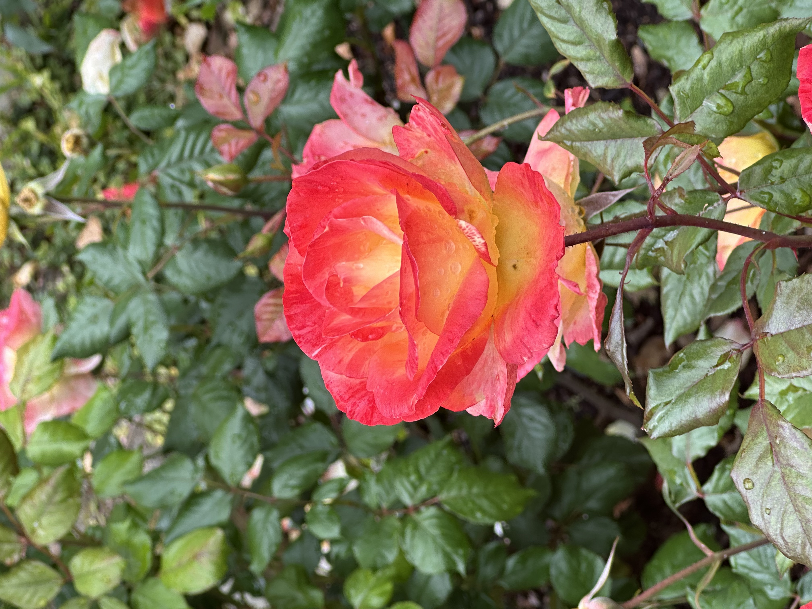
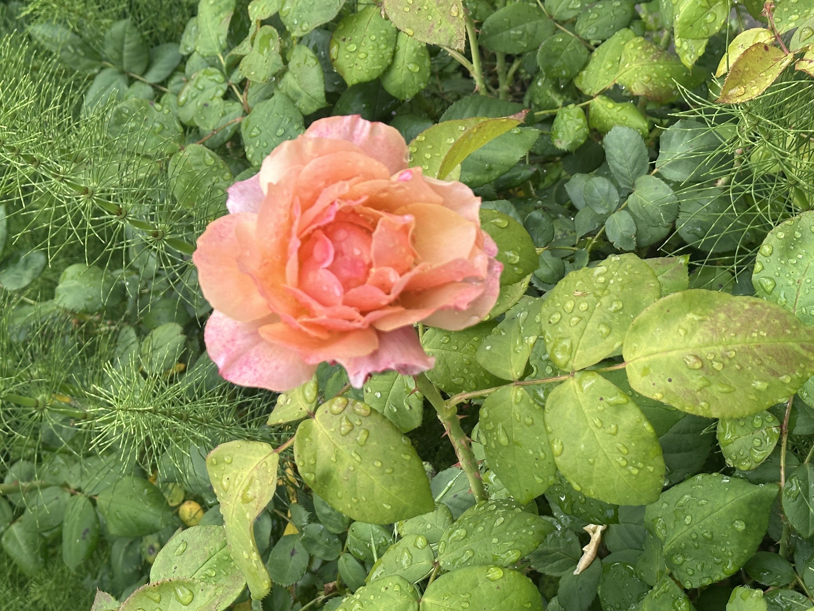
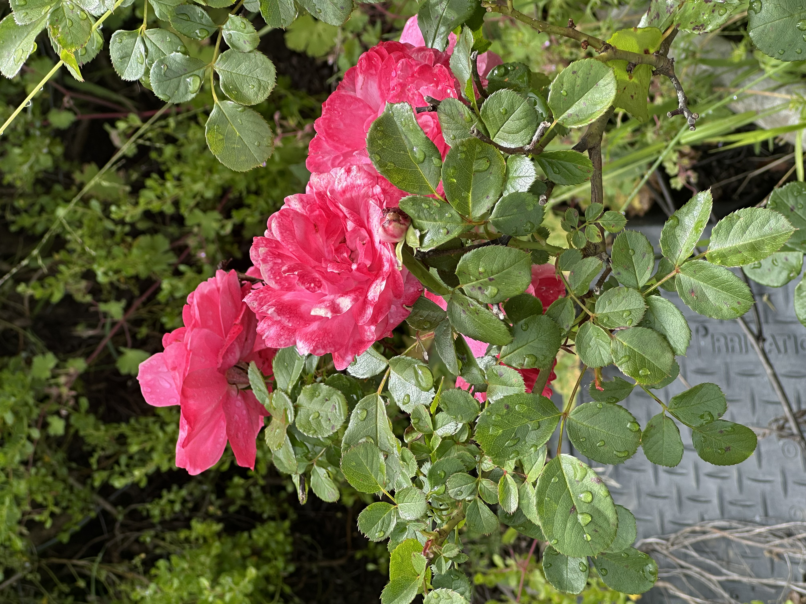
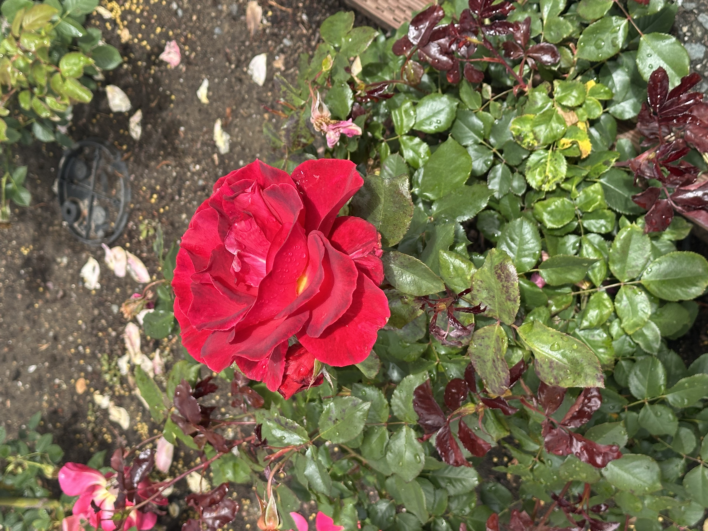
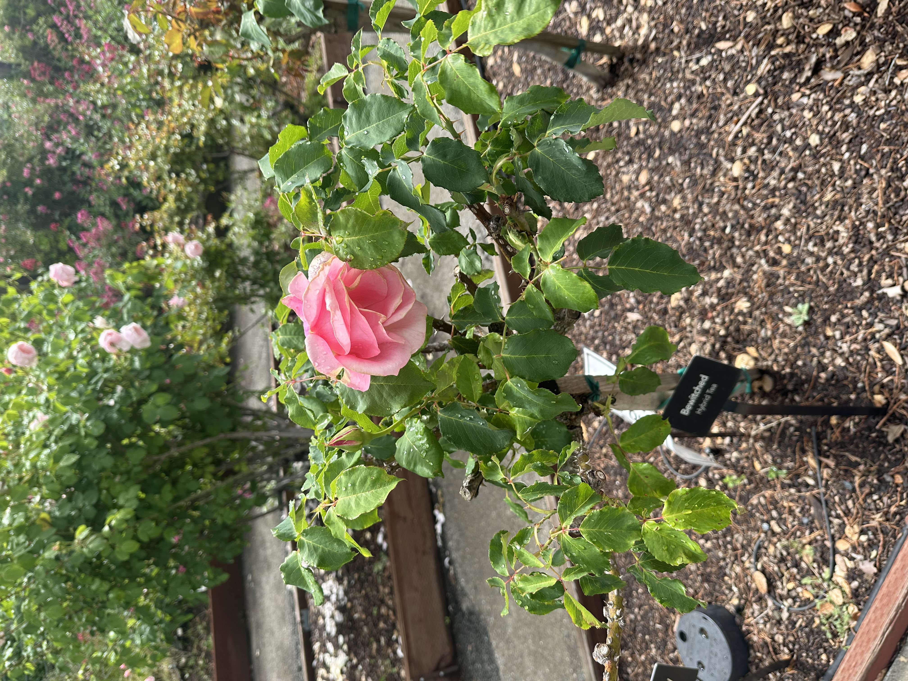

RACHEL MA
Flowers
When I was young, I didn't really like flowers. Wildflowers were only present for a little portion of the year, especially with Canadian winters being a thing. My mom also didn't particularly have a green thumb when I was growing up either, so plants come and go quickly. I grew onions and garlic bulbs for my science classes growing up and while I was really good at it, I did not feel the overwhelming need to grow them at home, and they didn't really flower. I wasn't super talented at drawing growing up either. But flowers were a common drawing prompt as a young child, and they were relatively easy for me to draw. So I drew a lot of flowers. A stem was just a line, which was connected to a center of a flower, which was just a circle. There needs to be at least four petals, and those were just some ovals and half circles, and there was symmetry. I could add more petals or more layers of petals or be a bit more adventurous with the shapes of petals if I wanted to, and color those petals with whatever crayons were present. Occasionally, I would draw myself into the frame, but with the flower astronomically large in comparison. Flowers are often associated with special events. I attended a few weddings when I was a kid. I saw elaborate ceremonies with various flower bouquets held by the bride and bridesmaids, and the sprinkle of flower petals down the aisles. The flowers disappear over the course of the day, whether tossed to another guest, or petals blown around in the wind. In grade school, there would always be flowergrams for Valentine's Day, where you could send roses to another person in the class. I was never a popular one growing up, nor did I have crushes, or got crushed on, so I never sent one or received any. I felt happy for my friends who received them and were eager to discover who sent them. I felt sad for my friends who gave flowers to their crushes and got rejected. Instead, I liked putting together Valentines cards or letters to give to my friends and classmates, much more than the sight of flowers over those years on that day. During high school, I was part of the Dance Committee, and so I was also involved in organizing prom for a few years. Flower table centerpieces were a requirement. Luckily some of the venues we booked often took care of them for us. However, this was not the case for our year. We left it so last minute, that my friend (and co-organizer) and I decided to walk to a local flower shop the night before and buy out a lot of their flower inventory. Surrounded by flowers in the shop, I was overwhelmed by the sheer amount of colors and types, and I simply agreed to everything that my friend picked out. I took home the flowers that remained after prom ended, and they wilted in a few days. But I also see flowers in the classics I love to read. Anne of Green Gables had a fondness of roses that were commonly found along her house, and lilies were a strong symbol of her relationship with her best friend. They are also around in some of the movies I love, like the hilarious "love fern" scene from "How To Lose a Guy in 10 Days", or the flower comb that Mulan wears to her matchmaker, or the small seedling plant from WALL-E. I started getting more into photography. For the proms I organized that weren't my own, I took many photos of people posing in their suits and dresses, and candids of them laughing with their friends at their tables. But when my dad taught me a bit more about how to take photos with his DSLR in the hiking trails of our neighborhood, I realized that I preferred taking photos of nature and seeing the bright pops of color from the flowers. Photos of flowers gradually accumulated on my phone, and I began to slowly develop a fondness for them over time. Now looking back, I didn't like flowers because they symbolized something fleeting, something temporary. Cut flowers usually died within a week or two and wildflowers disappeared when seasons changed. Most of the relationships from our grade school days that may have started with flowers, whether platonic or romantic, didn't last. I was always scared of things that are temporary. I often regret making decisions that lead to these outcomes. I've learned to overthink and over-analyze behaviors and options to help prevent this. I've started to become nonchalent about many things. It doesn't help that I have an good memory, a part of me always remembers people as how they were whenever we last spent the most amount of time together. But I'm starting to learn that just because some moments or things are temporary, doesn't mean that they are not meaningful. A lot of my friends have moved away, I experienced breakups, or delved down a rabbit hole on some tangential topic on my research, or I spend time sightreading other pieces that I won't perform any time soon over other pieces that I will soon. There is value in staying more in the present, that I should embrace more. I started to buy myself carnations from my sorority's charity sales on Valentine's Day every year ever since I joined. At first, it was to contribute to philanthropy efforts, but now I also admire the beauty in the pink, red, and white petals that keep me company in the middle of my tiny room. They last two weeks at most, but that's ok. One of the first times I received flowers (outside of graduations) was from a friend who surprised me with them after they watched me perform in a final class concert. They were a pleasant reminder for me that people enjoyed my playing, even when I was worried that I didn't do such a great job after not being able to practice enough due to a COVID week. I started going to more cherry blossom festivals over the years, and saw the Conservatory of Flowers in SF with a friend. Today, I was happily wandering around Berkeley's massive Rose Garden for an hour on my own, admiring the roses, and was simply happy that many of them survived a large downpour that happened yesterday. My mom developed a green thumb over the past few years, and she proudly shows me the growing flowers from the numerous plants in our dining room every time I visit. There's a chapter from Anne of Green Gables where Anne (who is a romantic) persuades her friends to reenact the "Lily Maid" from Tennyson's poem, with her lying in a raft surrounded by lilies. However it all goes wrong when the raft starts leaking, in which after that incident, Anne matures and realizes that she should be less of a romantic (and be more idealistic). But one of my favorite quotes from the book comes soon after: “Don’t give up all your romance, Anne,” ... “a little of it is a good thing—not too much, of course—but keep a little of it, Anne, keep a little of it.”






